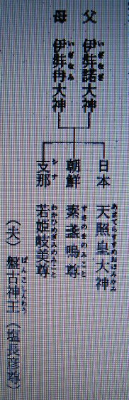

神と経綸について １
明主様御講義 「天地の根本の神様」 （昭和10年7月15日発行）
「天地の根本の神様の概略を知らせる。

宇宙及び森羅万象は、
天之御中主大神の御神体である。
この三神には個性が無いのである。

宇宙の中心に地球あり、そのまわりに日月星辰あり、総て地球が中心であり、他の火星とか水星とか色々なものには、人間は住っていないのである。
この地球を統治する中心が何かと言うと、図のごとき地軸又は地柱と言う。この神様の事を天照大神と申上げる。
この神様が本当の統治権を持たれて居られたのである。
つまり人としてお産れになったのでお姿があるのである。

父 伊弉諾（いざなぎ）大神
母 伊弉冉（いざなみ）大神
日本 天照皇大神（あまてらすすめおほみかみ）
朝鮮 素盞嗚尊（すさのをのみこと）
中国 若姫岐美尊（わかひめぎみのみこと）
（夫） 盤古神王（塩長彦尊）
伊弉諾、伊弉冉、御両神様が肉体を持って御現れになり、生殖作用をなされ、右の御三神をお産みになったのである。
天照皇大神様は日本に生れられ、素盞嗚尊は朝鮮の祖（後ユダヤ方面までも御出になられた）盤古神王は中国の祖となられたのである。
中国では盤古氏が一番位が高いとなっているのもこの為である。
これが天地経綸をなす根本なのである。
これにより日本、朝鮮、中国は兄弟であるということが判る。
朝鮮・満州が日本の手に入ったのもこれによる事である。

世界御統治の為に、天照皇大神は別な神になられるのは前述の通りな訳であります。
それでは何の様な神様と御成り遊ばすかと言うと、前記系図のごとく国常立尊及び伊都能売大神となられるのであります。
古事記の眼目は岩戸開きであります。
神代時代に天照皇大神は岩戸隠れをなされたのであります。
天照大神様が岩戸隠れ遊ばされた為に、今まで代々天皇陛下が御稜威（みいづ）を犯され遊ばされて御苦労遊ばされたのであります。
この岩戸隠れの時国常立尊は艮（うしとら）の鬼門へ御隠退遊ばされて居られたので、一方又幽界に入られては閻魔大王となられたのである。
天照大神様が御隠退遊ばされたことも一方においては天地経綸上色々の意味のあった事は申すまでもない事である。
世界を大別すると左のごとくなる
日 天照皇大神 国常立尊
伊都能売大神
月 素盞嗚尊
地 盤古神王
国常立尊及素盞嗚尊がこの地上を治められたが、国常立尊の御経綸は非常に厳格の為に、一般の神々が反対して御隠退なされ、艮の金神と申されたのである。
又素盞嗚尊が地上を治められた事もあったが、世が乱れてうまく治まらぬ為、根の堅州国に居られます母神様の御許に行く決心を以て、一度天に座（まし）ます姉神様たる天照大神様に御面会して行かんと天に登られたのであるが、
余り勢よく御登りになったので山河動揺し、天照大神様はこれを御覧になり、これは素盞嗚尊が謀叛なされ、御自分を征めに来るものと思召され、軍備をなされてお待ちになったのである。
ところが素盞嗚尊がその様な心はないと御弁解なされて御誓約をなされたのである。
その結果、天照大神様は曲玉をお首より御取りになり、天の真奈井にそゝがれると、五人の男の神様が御生れになられた。

天照大神―（五男）
天忍穂耳尊（あめのおしほみみのみこと）
天 穂 日 尊（あめのほひのみこと）
天津彦根尊（あまつひこねのみこと）
活津彦根尊（いくつひこねのみこと）
熊津樟日尊（くまつくすびのみこと）
五柱の神様がお産れになったのである。
素盞嗚尊はお腰の剣を抜き、これを天の真奈井にそゝがれると三人の女神様がお生れになられたのである。

素盞嗚尊―（三女）
田 心 姫 尊（タギリヒメ）
瑞 津 姫 尊（タギツヒメ）
市杵島姫尊（イチキシマヒメ）
この神様を総称して五男三女という。（五ノ三） 即ちイヅノメ
天の真奈井とは地上では琵琶湖となるのであります。
富士山と琵琶湖は日本の臍に当り、富士山が表、琵琶湖は裏となり、これを邪神に占領されると日本が自由になるから、観音様が富士山に兄の花姫尊として、
又、伊都能売大神様は金龍となられて、近江の琵琶湖にお潜みになられた。
この天の真奈井の天の八洲河原において誓約なされたのである。

東 天照大御神の御統治
誓約 天の真奈井
西 素盞嗚尊の御統治
このごとく、両神様が未来において御統治をなさる御約束がこの時出来たのである。
五男三女の神様はその時まで龍神となられ所々に別れて潜まれ、五男三女の神様こそは八大龍王の事なのである。
一、ナンダナーガラーシャ （難陀） 観 喜 龍 王
一、ウバナンダナーガラーシャ （跋難陀） 善観喜龍王
一、サーガラナーガラーシャ （娑羯羅） 海 龍 王
一、ワーシュキナーガラーシャ （和修吉） 多 頭 龍 王
一、タクシャカナーガラーシャ （徳叉迦） 視 毒 龍 王
一、マナスキンナーガラーシャ （摩那期） 大身大力龍王
一、ウッパラカナーガラーシャ （優鉢羅） 青龍華色龍王
一、アナッダブダナーガラーシャ（阿那裟達多）無悩清緊龍王
国常立尊・・・（後継者）・・・大 将 軍
素盞嗚尊・・・（ 〃 ）・・・大己貴尊（おほなむちのみこと）
盤台神王・・・（後継者）・・・天若彦尊（あめわかひこのみこと）
この後に至り天忍穂耳尊（あめのおしほみみのみこと）より御系統が出て瓊瓊杵尊（ににぎのみこと）となり、連綿として今に至る。」 （「観音講座 第一講座」より）
明主様御講義 「大光明世界の建設」 （昭和10年7月15日発行）
真善美の完全に行われる世界
真理の行われる世界 （真）
善の栄える世界 （善）
真理道理に動く世界 （美）
「主神が何の為に宗教を造られたかと言うと、宗教は弥勒出現までの世界人類をして、
ある程度以上の堕落をなさざらしめんが為の必要的限定的の経綸であって、
主神は一方悪の活動を許容され、物質文化を開き、一方その悪に因る弊害をはなはだしくせざらんが為に諸々（もろもろ）の人傑を出し、
宗教なるものを弘通（ぐつう）せしめ、善悪を巧妙に織られたのである。
故に今日までの経綸は善悪、明暗、美醜、相交りつゝ流転活動し、進歩し発達し来たのである。
宗教は東洋が元であることがよく判る。しかしこれが為、亜細亜（アジア）諸国が亡びたのである。
一方今度は素盞嗚尊に命じて悪の世界を作られたのである。
すなわち体的文化であり、物質文化のことになるのである。
この物質文化は西洋を中心として起ったのである。
ただ今人類はこれが為非常に迷った。
東洋は滅亡の状態となり、西洋は末期となり訳が判らんから、今世界中の古い時代の色々のものを見つけ出したのであるが、
古い事は最早事済となりしことばかりにて、これから先の事がいかになり行くか判らんのである。
今までの人の思想は善一方では出世することすら出来ない世である。
善・悪 迷いを生ずる。
悪をなせば法律にふれてあぶないし、善をなせば出世が出来ぬ。
この為両方に迷い、ふらふらしているのが大部分の今の状態である。
昔から忠臣義士は皆不幸の最後を遂げて居り、これに反して悪人がたとえ一時にもせよ栄えている事は何であるかという疑問をもつことであろう。これこそ大事である。
要するに、これまで神様は悪の世界を許されたからである。
故に何程か悪に荷担しなければ出世も栄えも出来ぬ状態なのであった。
これ位簡単なことが今まで判らなかったのである。
この為に迷いが生じて来たのである。
悪の強い半獣的思想が止まなかったのである。
これが悪事も神様が時期の来るまで幾らか許されていたから出来たのである。
所が主神が今回伊都能売（いづのめ）大神に命ぜられて日本を基点として、大光明世界を作らせ様となさって居られるのである。
体的でなく、霊的でなく、善か悪か想像のつかない世界を改めて、昭和十年一月一日観音会がたち、善悪無差別、善悪不二の世界を造る事になったのである。
今迄あった悪も善も何れも必要であったのである。」 （「観音講座 第一講座」より）